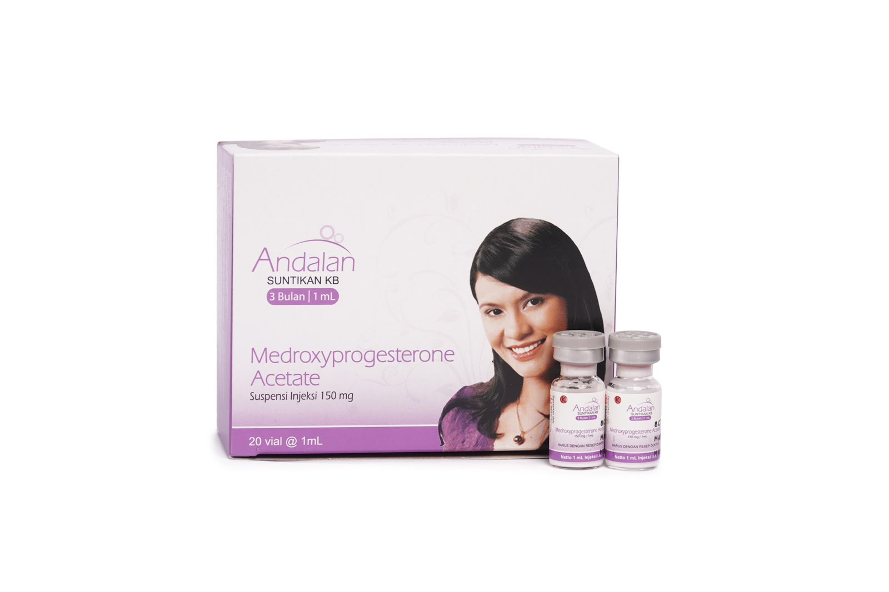
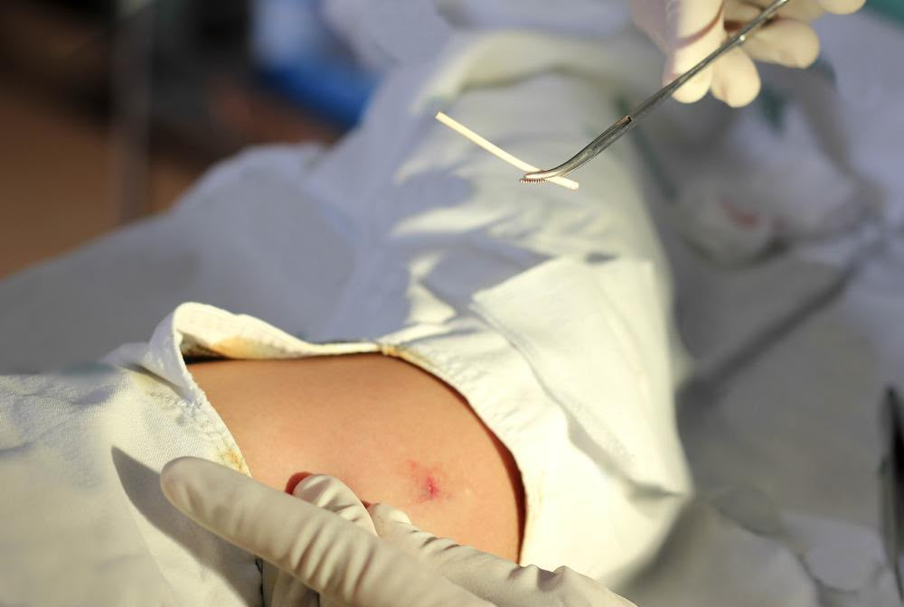
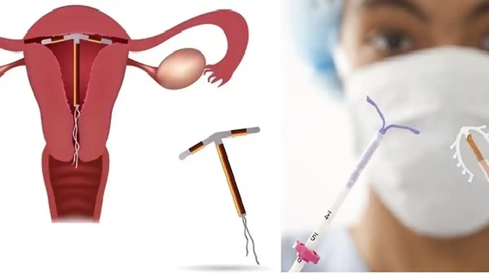
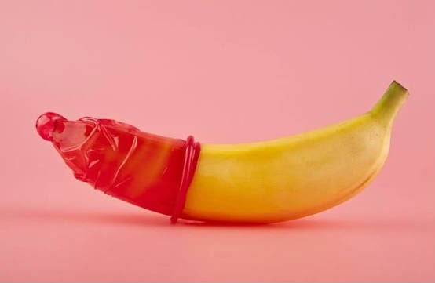

Edukasi KB
Memberikan informasi tentang jenis kontrasepsi, cara kerja, manfaat, efek samping, dan hal yang perlu diperhatikan.
Selamat datang di E-KB Pasca Salin, media edukasi untuk membantu ibu mengenal berbagai pilihan kontrasepsi setelah melahirkan, manfaat, efek samping, dan hal-hal yang perlu dipertimbangkan.
Ibu berhak mendapatkan informasi yang jelas agar dapat berdiskusi dengan bidan atau tenaga kesehatan dan menentukan pilihan secara sadar.
🌸 Mulai Belajar KB Kenali Kebutuhan Informasi
Mengenal kontrasepsi setelah persalinan melalui informasi digital yang sederhana dan mudah dipahami.
Memberikan informasi tentang jenis kontrasepsi, cara kerja, manfaat, efek samping, dan hal yang perlu diperhatikan.
Membantu ibu menyiapkan pertanyaan dan berdiskusi dengan bidan atau tenaga kesehatan mengenai pilihan kontrasepsi.
Informasi dapat dibaca melalui telepon genggam tanpa harus mengunduh aplikasi khusus.
Pelajari cara kerja, kelebihan, kemungkinan efek samping, dan hal yang perlu dipertimbangkan dari setiap metode.

Cara kerja: pil hormonal membantu mencegah kehamilan. Jenis dan aturan minumnya berbeda sesuai kandungan.
Kelebihan:
Kemungkinan efek samping:
Perlu diperhatikan: pil harus diminum sesuai jadwal. Pil yang mengandung estrogen tidak cocok untuk semua orang dan memerlukan penilaian tenaga kesehatan, terutama setelah melahirkan.

Cara kerja: suntikan hormonal yang umumnya diulang setiap bulan sesuai jadwal pelayanan.
Kelebihan:
Kemungkinan efek samping:
Perlu diperhatikan: banyak suntik bulanan mengandung estrogen. Waktu penggunaan setelah melahirkan dan kesesuaiannya untuk ibu menyusui perlu dinilai oleh tenaga kesehatan.

Cara kerja: suntikan hormon yang umumnya diulang setiap tiga bulan sesuai jadwal.
Kelebihan:
Kemungkinan efek samping:
Perlu diperhatikan: kembalinya kesuburan setelah berhenti dapat memerlukan waktu lebih lama dibanding beberapa metode lain. Penggunaan jangka panjang juga perlu dibahas bersama tenaga kesehatan terkait kesehatan tulang.

Cara kerja: batang kecil yang dipasang di bawah kulit lengan oleh tenaga kesehatan terlatih untuk melepaskan hormon.
Kelebihan:
Kemungkinan efek samping:
Perlu diperhatikan: pemasangan dan pelepasan harus dilakukan oleh tenaga kesehatan terlatih. Lama perlindungan bergantung pada jenis produk.

Cara kerja: alat kecil yang ditempatkan di dalam rahim oleh tenaga kesehatan. Tersedia jenis tembaga dan hormonal.
Kelebihan:
Kemungkinan efek samping:
Perlu diperhatikan: ada risiko yang jarang, seperti alat bergeser atau keluar, infeksi terkait pemasangan, dan perforasi rahim. Waktu pemasangan pascapersalinan perlu ditentukan oleh tenaga kesehatan.

Cara kerja: kondom menjadi penghalang agar sperma tidak masuk ke saluran reproduksi perempuan.
Kelebihan:
Kemungkinan masalah:
Perlu diperhatikan: gunakan kondom baru setiap kali berhubungan seksual dan ikuti petunjuk penggunaan pada kemasan.
Menyusui perlu dipertimbangkan saat memilih kontrasepsi, tetapi menyusui tidak otomatis mencegah kehamilan dalam semua keadaan.

Metode progestin saja, seperti implan, suntik tiga bulan, dan pil progestin, dapat menjadi pilihan bagi banyak ibu menyusui, bergantung pada waktu mulai dan kondisi masing-masing.
IUD dan kondom juga dapat dipertimbangkan sesuai kebutuhan. Suntik bulanan dan pil kombinasi yang mengandung estrogen memerlukan perhatian khusus setelah persalinan.
Metode amenore laktasi hanya dapat diandalkan bila syarat khususnya terpenuhi: bayi berusia kurang dari enam bulan, ibu belum mengalami menstruasi kembali, dan menyusui penuh atau hampir penuh siang dan malam.
Isi bagian ini untuk melihat ringkasan informasi yang ingin dipelajari. Hasilnya bukan diagnosis dan tidak menentukan metode KB.
Setelah mengisi form, website akan merangkum topik yang dipilih agar Ibu mengetahui bagian mana yang ingin dipelajari.
Ringkasan ini tidak memberikan rekomendasi kontrasepsi secara otomatis. Diskusikan pilihan dengan bidan atau dokter.
Gunakan panduan sederhana ini untuk menyiapkan konsultasi dan mencatat hal yang penting bagi Ibu.
Catatan ini hanya ditampilkan di halaman saat ini. Simpan sendiri jika ingin menggunakannya kembali.
Berikan penilaian terhadap pengalaman Ibu menggunakan website edukasi E-KB Pasca Salin.
Evaluasi membantu mengetahui apakah website mudah digunakan, informasinya mudah dipahami, dan dirasakan bermanfaat oleh pengguna.
Jika digunakan untuk penelitian, instrumen evaluasi perlu disesuaikan dengan tujuan penelitian dan dikaji bersama dosen pembimbing. Jangan menganggap form ini sebagai instrumen tervalidasi sebelum melalui proses yang diperlukan.